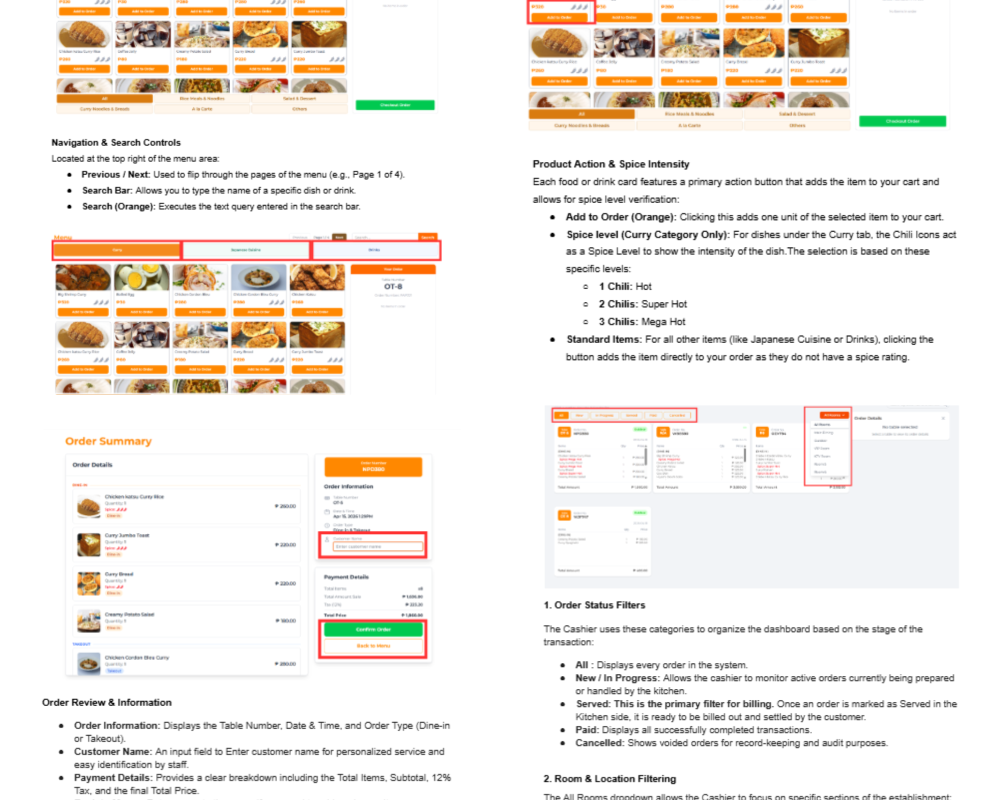
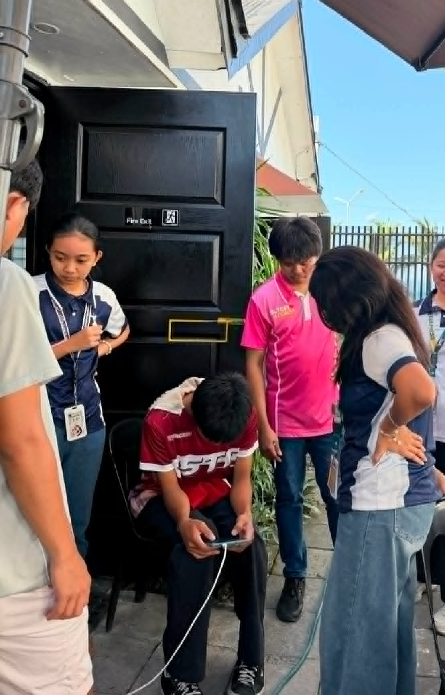

During this week, actual testing of the POS system was conducted within the restaurant environment together with the restaurant staff as the deployment phase of the system started. Observations were made on how the system functioned during actual operations, while feedback regarding usability, missing menu items, and interface concerns encountered during usage was gathered and reviewed.
Functionality and responsiveness testing were also performed across different devices to ensure compatibility and consistent performance during real-world operations. Based on the feedback received, missing menu products were fixed and certain functionalities were adjusted to improve system reliability and user experience.
In addition to testing and deployment activities, work was also focused on creating the user manual for the staff side of the POS system. Procedures and functionalities were organized and documented to help staff members understand how to properly operate the system during restaurant operations.
This week improved skills in real-world system testing, debugging, documentation, deployment support, and user feedback analysis. Valuable experience was also gained in identifying practical issues that arise during actual business operations while understanding the importance of creating clear and organized user guides for end users.



